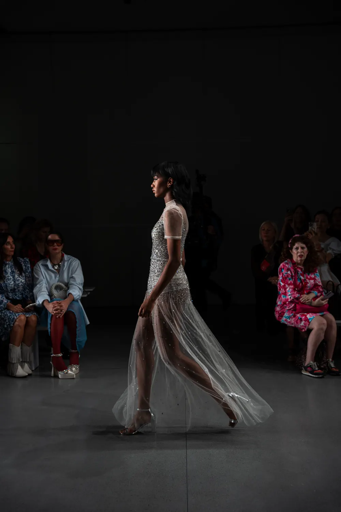

ROMAIN
MAULAVÉ
Saisons
Maisons
Contact
EN
|
FR
Saisons
Maisons
Contact
EN
|
FR
New York Fashion Week
Septembre 2026
Saisons

Dernière saison
New York Fashion Week · SS27
Septembre
2026
New York Fashion Week · FW25
Février
2025
Défilés photographiés
Maisons
FILIPINXT
Février 2025 · New York
Global Fashion Collective
Septembre 2026 · Février 2025 · New York
PUBLIC SERV-CE
Septembre 2026 · New York
 New York Fashion Week
Septembre 2026
New York Fashion Week
Septembre 2026
 New York Fashion Week
Septembre 2026
New York Fashion Week
Septembre 2026